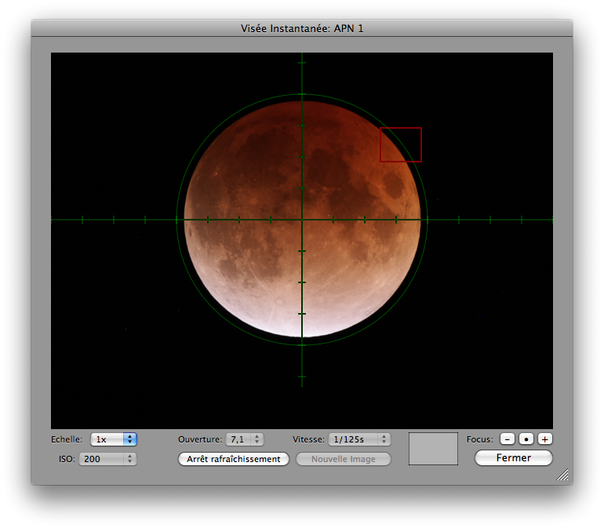
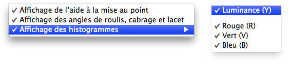

Utiliser la Visée Écran Déportée (Remote Live View)
Pour utiliser la visée écran déportée (remote live view) dans Lunar Eclipse Maestro vous devez ouvrir le fenêtre Visée Écran (Live View). Cela ne fonctionne qu’avec les APNs pour lesquels cette fonctionnalité est disponible.
-
Dans le menu APN, sélectionnez Live View > Numéro/nom de l’APN.


-
Vous pouvez maintenant ajuster la mise au point de l’objectif ou du télescope et voir le résultat directement sur l’écran de votre Mac.
Un indicateur de qualité de mise au point s’affiche en vert en haut à gauche de la vue. La valeur de celui-ci est en général comprise entre 0 et 55: plus sa valeur est élevée et plus la mise au point doit être bonne. Mais il faut garder à l’esprit que cet indicateur est calculé en temps réel par analyse d’images et est donc uniquement une aide.
Un menu contextuel est disponible à l’aide d’un clic droit; celui-ci vous permet de sélectionner quelques options:
- Affichage de l’aide à la mise au point - Affiche ou masque la valeur de l’indicateur de mise au point.
- Affichage des angles de roulis, cabrage et lacet - Affiche ou masque les valeurs des angles de roulis, cabrage et lacet avec les appareils équipés (Nikon seulement).
-
Affichage des histogrammes - Pour gérer l’affichage des différents histogrammes
- Luminance (Y)
- Rouge (R)
- Vert (V)
- Bleu (B)
-
Sur les appareils équipés d’objectifs motorisés et pour lesquels la mise au point manuelle n’est pas sélectionnée, il est possible d’affiner la mise au point directement depuis le Mac à l’aide de deux boutons moins (-) et plus (+): cette méthode est beaucoup plus précise qu’une mise au point manuelle sur l’objectif. Un troisième permet de faire une mise au point automatique qui peut ensuite être affinée. Une fois la mise au point terminée, n’oubliez pas de remettre l’appareil et l’objectif sur la mise au point manuelle.
-
Il est possible de grossir n’importe quelle partie de l’image afin d’affiner la mise au point.
Pour ce faire il faut dans un premier temps déplacer la zone de focus, le cadre rouge ou parfois vert, et ensuite changer le facteur d’échelle. Pour déplacer la zone de focus, il suffit de cliquer n’importe où dans l’image et la zone se centrera autour de cette position.
Un petit graphique de navigation, dans le coin inférieur droit, indique la position et la taille relative de la vue en cours (en gris clair) par rapport au cadre de l’APN (en gris foncé) vous permet de mieux vous repérer.
|
Lorsque la visée écran est affichée à l’écran, toutes les expositions du script en cours d’exécution sont annulées pendant cette période. Toutefois, une image de la visée écran est enregistrée pour chacune des expositions qui n’ont pu être effectuées; un dossier nommé Live View Exposures est créé dans le dossier Documents de l’utilisateur courant. Un indicateur rouge, situé sur la gauche du facteur d’échelle, vous indiquera qu’une ou plusieures expositions ont été manquées. Un réglage des préférences générales permet aussi de systématiquement forcer la fin de la visée écran lorsqu’une exposition risque d’être manquée. La séquence des expositions reprendra normalement lorsque la fenêtre sera fermée.
Note pour les APNs Nikon :
La température interne de l’appareil peut augmenter si le mode Live View est utilisé pendant une période prolongée. Afin d’éviter d’endommager les circuits internes de l’appareil numérique, le mode Live View se désactive automatiquement avant que l’appareil ne surchauffe. Un compte à rebours s’affiche en rouge, en bas à gauche de la vue, 30 secondes avant la fin de la prise de vue. À des températures ambiantes élevées, cet affichage peut apparaître immédiatement après avoir sélectionné le mode Live View.